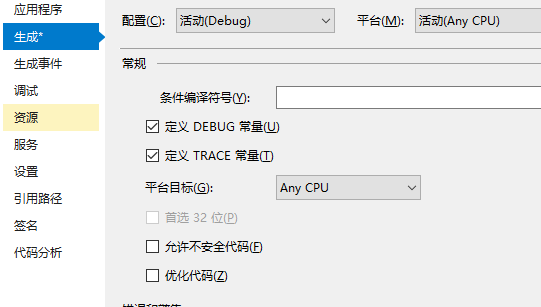
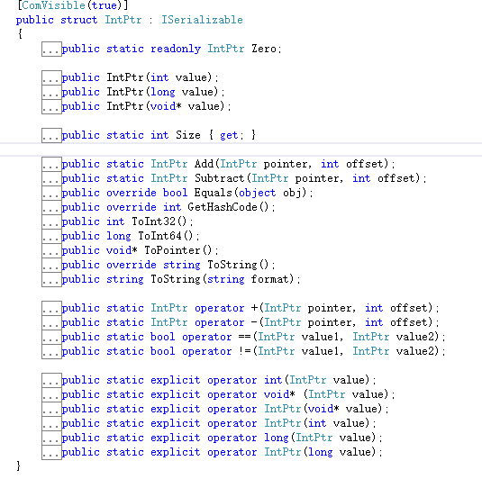
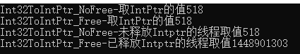

前言
在职场中，确立自身的技术水平很重要，因为，如果你被标记成了技术菜鸟，那么你的工作一旦做快了，大家就会一致的认为这个任务比较简单；如果你未如期完成，则会被各种明嘲暗讽，你不但无法获得合理的表扬，还会无端被迫接受攻击。
但是，如果你被标记成了技术高手，那么你就算任务延期也会被理解，因为，他们会认为你当前的任务太难了。而且，即便你有些性格缺陷，大家也是会接受你，他们会认为这是你的特点。
所以，进入新的工作岗位，第一件事是确立自身的技术水平，这会让你省却很多不必要的麻烦，会让你在公司工作时，保持比较良好的状态，进而延长你在公司任职的时间。
那么这些与内存有什么关系呢？因为就是会有些人，会以你不了解【他们的】内存来攻击你的技术水平。 因为在职场生存，除了不停的提升自己以外，还是要关注周围同事对你的看法，如果有人以一些你不了解的技术问题来否定你的技术水平，这就会很影响你在其他同事心中的形象，从而影响你在职场中建立的技术水平的等级，这会让你在未来的职场生涯中遇到更多的麻烦。
虽然，害人之心不可有，但是防人之心不可无，所以，我们需要了解【他们的】内存，来保护自己，在被攻击时，做更好的应对，甚至反击。
托管内存与非托管内存
托管内存
C#语言开发的程序所使用的内存，我们称之为托管内存。那么什么是托管内存呢？我们可以先理解为，C#专用内存；即当C#的程序运行起来，会向电脑内存申请一块专用的内存区，而这块内存区，就叫做托管内存。
在C#语言开发的程序中，我们所声明的变量，不论是常量，还变量，都在这块内存中。即，我们声明一个int k或是声明一个对象 new Class，他们都是在这块内存中的。
而这块内存（托管内存），它很特别，它自身是带管理功能的，即，它自己会判断，你声明的内存还用不用，不用他就给回收了。
既然是管理，那就肯定有个管理工具，那么，托管内存的管理工具是什么呢？
GC——控制系统垃圾回收器，这个就是托管内存的管理工具了，他是专门管理内存回收的，这里就不过多的讲解GC了，有兴趣的朋友可以参考下面的网址。
参考网址：
非托管内存
既然，C#语言开发的程序所使用的内存，都叫托管内存，那么非托管内存自然就是C#程序不使用的内存了。
那么，C#程序不使用的内存，有什么用呢？我们为什么要学习呢？
因为，很多语言并不像C#这么优秀，有专门的内存管理机制，比如C++；所以，他们的变量和常量都是存储在非托管内存区的（对于很多语言而言，并没有托管内存和非托管内存之分，他们就一个内存，在内存中找个地址，然后存储数据）。
所以，当我们在做项目遇到要和其他语言进行交互时，就要接触非托管内存了，因为很多时候，我们需要从非托管内存中获取一些的变量，或者向非托管内存中写入一些数据供其他语言调用。
因此，从理论上来讲，C#语言对内存的管理是最复杂的，远大于C++，因为它不仅自己开辟了一块内存专区，同时又兼顾着控制专区外的内存。
下图为托管内存与非托管内存的关系。
安全代码与非安全代码
安全代码
C#的安全代码就是C#日常写的代码，其特点就是代码中声明的变量都在托管内存；而之所以叫安全代码，则是因为内存全部托管给了内存管理器，不存在内存泄漏的问题（当然，这是理论上，实际情况某些微软的控件还是存在内存泄漏的问题，相信一定有人遇到过，不过99%的情况下是没问题的）。
非安全代码
非安全代码显然是与安全代码相对的，即非安全代码的变量所使用的内存都在非托管内存区。
因为常规状态下我们写的代码都是安全代码，所以想写非安全代码一定要加个特殊标记，那就是unsafe。
unsafe
{
}
如上述代码，在unsafe的区域内，我们就可以编写非安全代码。
但C#项目在默认的情况下是不支持非安全代码的，即当我们尝试些unsafe时，编译器会报错。为什么不默认不允许我们使用非安全代码呢？很简单因为它不安全嘛。
想启用C#的非安全代码设置也很简单，右键项目—属性—生成，如下图所示：

默认情况下，【允许不安全代码】是非勾选状态；当我们勾选上之后，编译器就允许我们使用unsafe了。
那么，在unsafe区间如何控制非托管区域的内存呢？
这就需要使用到指针了，下面我们讲一下C#中的指针。
注意：非安全代码并不是C#的主要功能，而是为了兼容其他使用非托管内存的语言而存在的，所以即便你不了解也并不会影响你的技术水平，但在职场中，这块的内容非常容易成为菜鸟攻击你的利器，所以学会它是职场生存的重要手段之一。
指针(Pointer)与句柄(IntPtr)
作为C#开发，我们要知道【宏】和【指针】会严重扰乱代码的脉络，在开发中一定要尽量避免使用。
比如，你定义了一个Void*的指针，那Void*到底是个什么东西啊！没人知道，因为它什么都能指向，很明显，这严重的影响了代码的正常阅读，因为我需要读到Void*的时候，还有调查下它是个什么东西；但我们又不是在看论文，看到特有名词还得查一下他的含义，这简直太荒唐了。
但在职场中，这些我们要尽量避免使用的东西，却是最被经常谈论的知识点，因为现在任何大学都会教C语言，所以，不论你的同事是程序员还是非技术人员，他们都多少听过指针。而且【不会指针就不能算好程序员】几乎已经是一个职场准则了。
因此，尽管C#开发不用这部分内容，也一定要了解起来，不能授人以柄不是嘛。
指针(Pointer)
指针简单来说就是指向一块内存的内存，我们可以通过指针指向的内存地址找到变量的值，并且改变它。
在C#中，我们也是可以定义指针的，不过那需要在非安全代码内定义；因为指针直接从内存中获取地址的，也就是说，它并不是通过C#的内存管理工具来开辟内存的，所以，指针申请的这块内存并不在托管代码的内存区中，那么，很自然的，这块内存就在非托管代码的内存区中了。
下面我们先看这样一段代码，来了解一下指针：
string str = "I am Kiba518!";
int strlen = str.Length;
IntPtr sptr = MarshalHelper.StringToIntPtr(str);
unsafe
{
char* src = (char*)sptr.ToPointer();
//Console.WriteLine("地址" + (&src)); //这样写会报错，C#并不支持这样取指针地址
for (int i = 0; i <= strlen; i++)
{
Console.Write(src[i]);
src[i] = '0';
}
Console.WriteLine();
Console.WriteLine("========不安全代码改值=========");
for (int i = 0; i <= strlen; i++)
{
Console.Write(src[i]);
}
}
Console.ReadKey();
上述代码非常简单，我先将字符串发送给MarshalHelper帮助类转换成句柄（MarshalHelper中会开辟一个非托管区内存空间，然后把托管区的字符串str的值赋值到这个非托管区内存，再生成一个指针指向这块内存，最后在将这个指针转换成IntPtr句柄，当然描述起来很复杂其实也就一句话Marshal.StringToHGlobalAnsi(str)）然后调用转换出来的句柄的ToPointer方法获取到指针，接着在在非全代码区域使用指针输出它的内容，再修改该它的值，最后将修改后值的指针内容打印出来。
PS：代码中的MarshalHelper是我封装的一个类，用于处理类型与IntPtr的转换，下方github中有该类代码。
----------------------------------------------------------------------------------------------------
其实指针在C#中有意义的功能就只剩下内存偏移量调整了，但实际开发中，C#项目是不需要做内存偏移量调整这种操作的。所以，纯C#项目几乎可以说已经弃用指针了。
句柄(IntPtr)
句柄其实是一个指针的封装，同样的，它也不常用，因为C#项目中指针都被弃用了，那指针的封装—句柄自然也被弃用了。
但总有特殊的地方会用到指针，比如调用C++动态库之类的；所以微软贴心的为我们做了个句柄，毕竟指针用起来太难受了。
句柄是一个结构体，简单的来说，它是指针的一个封装，是C#中指针的替代者，下面我们看下句柄的定义。

从图中我们可以看到，句柄IntPtrt里包含创建指针，获取指针长度，设置偏移量等等方法，并且为了编码方便还声明了些强制转换的方法。
看了句柄的结构体定义，相信稍微有点基础的人已经明白了，在C#中，微软是希望抛弃指针而改用更优秀的句柄代替它的。
但我们还会发现，句柄里还提供一个方法是ToPointer()，它的返回类型是Void*，也就是说，我们还是可以从句柄里拿到C++中的指针，既然，微软期望在C#中不要使用指针，那为什么还要提供这样的方法呢？
这是因为，在项目开发中总是会有极特殊的情况，比如，你有一段C++写的非常复杂、完美的函数，而将这个函数转换成C#又及其耗时，那么最简单省力的方法就是直接在C#里启用指针进行移植。
也就是说，C#支持指针，其实是为了体现它的兼容性，并不是提倡大家去使用指针。
内存释放
我先看如下代码：
static void Main(string[] args)
{
int retNoFree = Int32ToIntPtr_NoFree();
IntPtr retNoFreeIP = new IntPtr(retNoFree);
int retFree = Int32ToIntPtr_Free();
IntPtr retFreeIP = new IntPtr(retFree);
new Task(() =>
{
int afterNoFree = MarshalHelper.IntPtrToInt32(retNoFreeIP);
Console.WriteLine("Int32ToIntPtr_NoFree-未释放Intptr的线程取值" + afterNoFree);
int afterFree = MarshalHelper.IntPtrToInt32(retFreeIP);
Console.WriteLine("Int32ToIntPtr_Free-已释放Intptr的线程取值" + afterFree);
}).Start();
Console.ReadKey();
}
static int Int32ToIntPtr_Free()
{
IntPtr pointerInt = new IntPtr();
int testint = 518;
pointerInt = MarshalHelper.Int32ToIntPtr(testint);
int testintT = MarshalHelper.IntPtrToInt32(pointerInt);
Console.WriteLine("Int32ToIntPtr_Free-取IntPtr的值" + testintT);
MarshalHelper.Free(pointerInt);
int testintT2 = (int)pointerInt;
return testintT2;
}
static int Int32ToIntPtr_NoFree()
{
IntPtr pointerInt = new IntPtr();
int testint = 518;
pointerInt = MarshalHelper.Int32ToIntPtr(testint);
int testintT = MarshalHelper.IntPtrToInt32(pointerInt);
Console.WriteLine("Int32ToIntPtr_NoFree-取IntPtr的值" + testintT);
int testintT2 = (int)pointerInt;
return testintT2;
}
代码中有两个函数Int32ToIntPtr_Free和Int32ToIntPtr_NoFree，两个函数都是将变量testint转换成指针，然后返回该指针的地址（int类型），区别是一个调用了MarshalHelper.Free(pointerInt)进行指针内存释放，一个没有调用。
两个函数执行完成后，开启线程，通过其返回的指针的地址，在重新查找指针对应的内容，结果如下图：

从图中我们可以看到，未进行Free的IntPtr，仍然可以通过指针地址获取到他的内容，而已释放的IntPtr，通过地址再获取内容，则已经是其他内容了。
PS：在C#中指针的内存释放需要 Marshal.FreeHGlobal(IntPtr)方法，同样的我将其封装到了MarshalHelper中了。
结语
在职场，我们需要防备的通常不是高手，而是菜鸟，所以我们必须要增加各种各样的知识储备来应对这些奇奇怪怪的事情。
----------------------------------------------------------------------------------------------------
到此，C#内存管理讲解就结束了。
代码已经传到Github上了，欢迎大家下载。
Github地址：https://github.com/kiba518/MarshalHelper
----------------------------------------------------------------------------------------------------
注：此文章为原创，任何形式的转载都请联系作者获得授权并注明出处！
若您觉得这篇文章还不错，请点击下方的【推荐】，非常感谢！